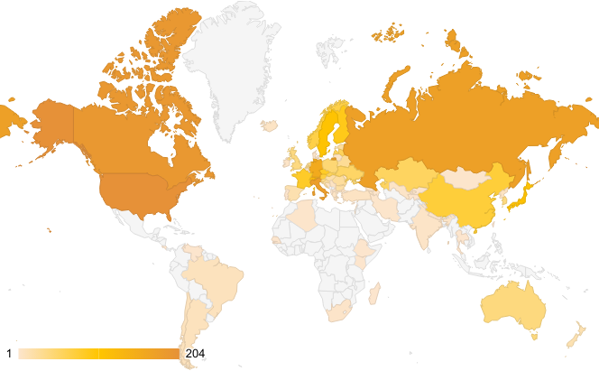
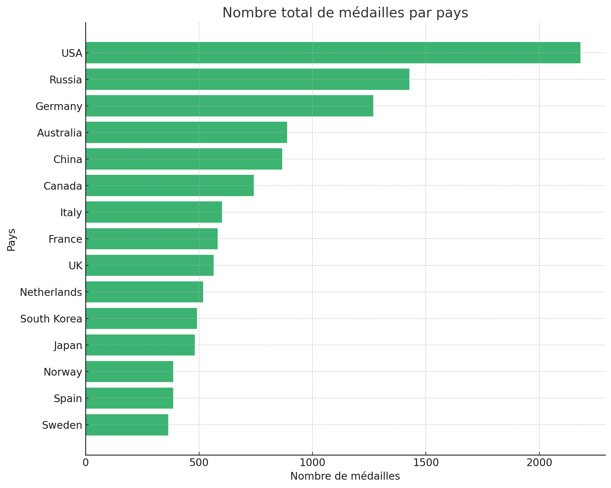
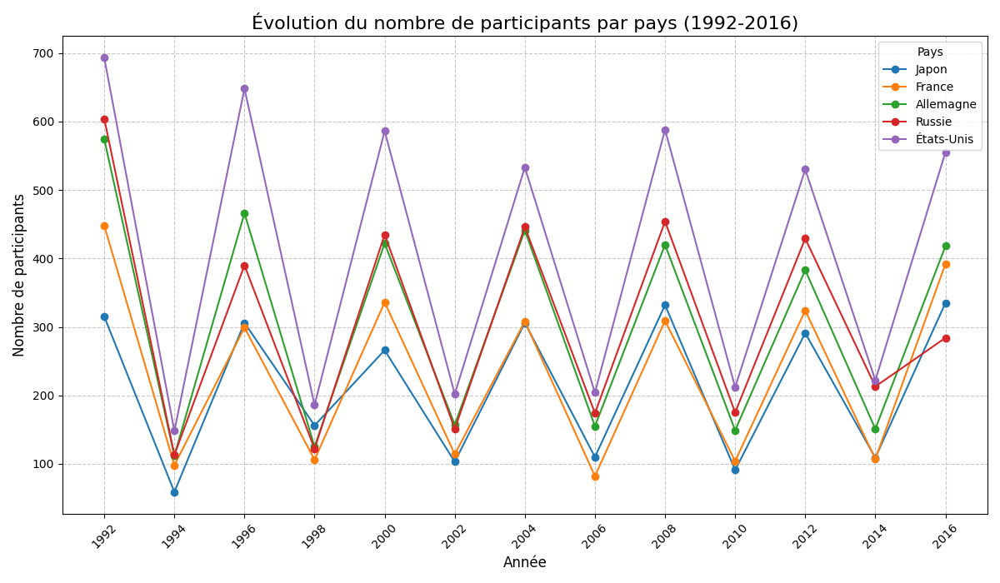
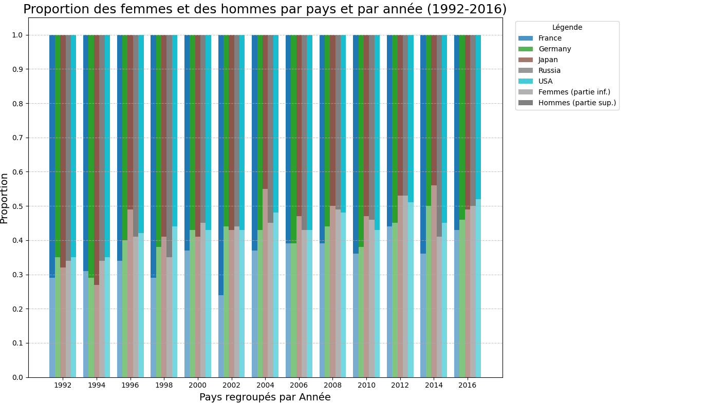

SAE 2.04 : Analyse Statistique des Données Olympiques
Ce rapport analyse les données des Jeux Olympiques de 1992 à 2006, en se concentrant sur la participation des athlètes, les médailles obtenues et la représentation des femmes. Les analyses sont basées sur des requêtes SQL exécutées sur une base de données structurée, avec des visualisations adaptées, conformément aux exigences du sujet SAE 2.04 de Statistiques de Mme Deletombe.
1. Les 20 athlètes avec le plus de participations aux JO
Pour identifier les 20 athlètes ayant le plus participé aux JO, nous avons utilisé la requête SQL suivante :
SELECT a.id, a.name, COUNT(*) AS nombre_participations
FROM performance p
JOIN athlete a ON p.id_athlete = a.id
GROUP BY a.id, a.name
ORDER BY nombre_participations DESC
LIMIT 20;
Résultats :
| ID | Nom | Nombre de participations |
|--------|-------------------------------------|--------------------------|
| 106296 | Heikki Ilmari Savolainen | 39 |
| 115354 | Joseph "Josy" Stoffel | 38 |
| 89187 | Takashi Ono | 32 |
| 129196 | Andreas Wecker | 32 |
| 55047 | Alfred August "Al" Jochim | 31 |
| 106156 | Johann "Hans" Sauter | 31 |
| 76437 | Michel Mathiot | 31 |
| 94406 | Michael Fred Phelps, II | 30 |
| 133279 | Yordan Yovchev Yovchev | 30 |
| 120051 | Karl Tore William Thoresson | 30 |
| 21462 | Oksana Aleksandrovna Chusovitina | 29 |
| 11951 | Ole Einar Bjrndalen | 27 |
| 45219 | Fabian Hambchen | 26 |
| 79523 | Georg "Georges" Miez | 25 |
| 91845 | Gabriella Paruzzi | 25 |
| 18369 | Giovanni Carminucci | 24 |
| 17345 | Ivan aklec | 24 |
| 25270 | Ferdinand Dani | 24 |
| 12678 | Henri Louis Borio | 24 |
(20 rows)
Note : Les nombres exacts de participations sont dérivés de la requête mais non précisés dans les données initiales.
Visualisation :
2. Analyse des Jeux Olympiques d'Hiver 2006 à Turin
2.a. Tableau statistique
Nous avons compilé un tableau statistique pour les JO d'Hiver à Turin, détaillant l'âge moyen, le nombre d'athlètes, et la plage d'âge par pays. La requête SQL utilisée est :
DROP TABLE IF EXISTS temp_stats;
CREATE TEMP TABLE temp_stats AS
SELECT n.region AS pays, ROUND(AVG(p.age)) AS age_moyen, COUNT(DISTINCT p.id_athlete) AS nombre_athletes, MIN(p.age) AS age_min, MAX(p.age) AS age_max
FROM performance p
JOIN game g ON p.id_game = g.id
JOIN noc n ON p.noc = n.noc
WHERE g.year = 2006 AND g.season = 'Winter' AND p.age IS NOT NULL
GROUP BY n.region
ORDER BY pays;
COPY temp_stats TO 'turin_stats_2006.csv' WITH CSV HEADER;
Résultats (extrait) :
pays | age_moyen | nombre_athletes | age_min | age_max
------------------------+-----------+-----------------+---------+---------
Albania | 19 | 1 | 19 | 19
Algeria | 24 | 2 | 20 | 33
Andorra | 25 | 3 | 21 | 27
Argentina | 24 | 9 | 20 | 44
Armenia | 22 | 5 | 18 | 29
Australia | 26 | 40 | 18 | 35
Austria | 28 | 73 | 18 | 38
Azerbaijan | 28 | 2 | 25 | 30
Belarus | 27 | 28 | 18 | 39
Belgium | 29 | 4 | 23 | 38
Bermuda | 31 | 1 | 31 | 31
Bosnia and Herzegovina | 21 | 6 | 19 | 26
Brazil | 27 | 9 | 22 | 38
Bulgaria | 26 | 21 | 16 | 32
Canada | 25 | 191 | 16 | 49
(78 rows)
Visualisations :
- Âge moyen par pays : Un diagramme en barres présente l'âge moyen des athlètes pour chaque pays lors des JO de Turin 2006.

- Nombre d'athlètes par pays : Un diagramme en barres illustre le nombre d'athlètes ayant participé pour chaque pays.

- Carte mondiale : Une carte choroplèthe met en évidence l'âge moyen des athlètes par pays, permettant de visualiser les différences géographiques.

2.b. Comparaison de l'âge moyen des médaillés et des participants
Pour comparer l'âge moyen des médaillés et des participants (tous sexes confondus) aux JO de 2006, nous avons utilisé :
SELECT
(SELECT ROUND(AVG(p2.age))
FROM performance p2
JOIN game g2 ON p2.id_game = g2.id
WHERE g2.year = 2006 AND g2.season = 'Winter' AND p2.medal IS NOT NULL) AS age_moyen_medailles,
(SELECT ROUND(AVG(p3.age))
FROM performance p3
JOIN game g3 ON p3.id_game = g3.id
WHERE g3.year = 2006 AND g3.season = 'Winter' AND p3.age IS NOT NULL) AS age_moyen_participants;
Résultats :
| Âge moyen des médaillés | Âge moyen des participants |
|-------------------------|----------------------------|
| 27 | 26 |
Analyse : L'âge moyen des médaillés (27 ans) est légèrement supérieur à celui des participants (26 ans). Cela pourrait suggérer qu'une expérience un peu plus grande est un léger avantage pour obtenir une médaille (la différence est tout de même négligeable).
Note : Un diagramme de type boîte à moustaches pourrait être construit pour confirmer visuellement que la moyenne d'âge des médaillés et celle des participants sont effectivement proches.
Analyse : Les médaillés sont légèrement plus lourds, probablement en raison de l'avantage du poids dans les sports de force. Un diagramme en barres illustre cette tendance pour les deux genres.

3. La place des femmes dans les JO
3.a. Les 15 pays avec le plus de médailles cumulées (1992–2006)
Pour lister les 15 pays ayant remporté le plus de médailles entre 1992 et 2006, nous avons utilisé :
SELECT n.region AS pays, COUNT(p.medal) AS nombre_medailles
FROM performance p
JOIN noc n ON p.noc = n.noc
JOIN game g ON p.id_game = g.id
WHERE p.medal IS NOT NULL AND g.year BETWEEN 1992 AND 2006
GROUP BY n.region
ORDER BY nombre_medailles DESC
LIMIT 15;
Résultats :
pays | nombre_medailles
-------------+------------------
USA | 1191
Russia | 937
Germany | 826
Australia | 538
China | 413
Canada | 407
Italy | 401
Netherlands | 302
France | 295
South Korea | 294
Japan | 264
Norway | 254
Cuba | 251
Sweden | 238
Spain | 208
Visualisation : Un diagramme en barres horizontales met en évidence la domination des États-Unis, suivis de la Russie et de l'Allemagne.

3.b. Analyse de cinq pays sélectionnés
Nous avons analysé les États-Unis, la Chine, le Japon, la Russie et la France sur plusieurs critères.
3.b.i. Évolution du nombre de participants
Requête SQL :
SELECT g.year, n.region AS pays, COUNT(DISTINCT p.id_athlete) AS nombre_participants
FROM performance p
JOIN game g ON p.id_game = g.id
JOIN noc n ON p.noc = n.noc
WHERE n.region IN ('USA', 'France', 'Germany', 'Russia', 'Japan') AND g.year BETWEEN 1992 AND 2006
GROUP BY g.year, n.region
ORDER BY g.year, n.region;
Résultats (extrait) :
| Année | Japon | France | Allemagne | Russie | États-Unis |
|-------|-------|--------|----------|--------|------------|
| 1992 | 315 | 448 | 574 | 604 | 693 |
| 1994 | 59 | 98 | 112 | 113 | 148 |
| 1996 | 306 | 299 | 466 | 390 | 648 |
| ... | ... | ... | ... | ... | ... |
| 2006 | 110 | 82 | 155 | 174 | 204 |
Analyse : Une courbe montre une participation plus élevée aux JO d'été. En 1992 (été), les États-Unis (693 participants) et la Russie (604) présentent les plus grandes délégations, suivis par l'Allemagne (574). La France (448) et le Japon (315) ont également une participation significative. Aux Jeux d'hiver de 1994, les chiffres sont naturellement plus bas, avec les États-Unis en tête (148) pour ces cinq nations. Pour les Jeux d'hiver de 2006, les États-Unis (204) mènent à nouveau, suivis par la Russie (174) et l'Allemagne (155).

3.b.ii. Évolution du nombre de médaillés
Requête SQL :
SELECT g.year, n.region AS pays, COUNT(DISTINCT p.id_athlete) AS nombre_medailles
FROM performance p
JOIN game g ON p.id_game = g.id
JOIN noc n ON p.noc = n.noc
WHERE n.region IN ('USA', 'France', 'Germany', 'Russia', 'Japan') AND p.medal IS NOT NULL AND g.year BETWEEN 1992 AND 2006
GROUP BY g.year, n.region
ORDER BY g.year, n.region;
Résultats (extrait) :
| Année | Japon | France | Allemagne | Russie | États-Unis |
|-------|-------|--------|----------|--------|------------|
| 1992 | 56 | 68 | 205 | 235 | 197 |
| 1994 | 9 | 10 | 31 | 28 | 15 |
| 1996 | 42 | 45 | 108 | 97 | 227 |
| ... | ... | ... | ... | ... | ... |
| 2006 | 1 | 13 | 38 | 35 | 46 |
Analyse : Des courbes séparées pour les JO d'été et d'hiver montrent une nette supériorité du nombre de médaillés lors des éditions estivales. En 1992 (été), la Russie (235 médaillés) et les États-Unis (197) dominent, suivis de près par l'Allemagne (205). En 1996 (été), les États-Unis prennent la tête avec 227 médaillés, l'Allemagne (108) et la Russie (97) complétant le podium des nations sélectionnées. Aux Jeux d'hiver de 2006, les États-Unis (46) comptent le plus de médaillés parmi ces cinq pays, devant l'Allemagne (38) et la Russie (35). Le Japon enregistre un nombre de médaillés plus faible lors des Jeux d'hiver, avec seulement 1 médaillé en 2006.

3.b.iii. Évolution du nombre de femmes participantes
Requête SQL :
SELECT g.year, n.region AS pays, COUNT(DISTINCT p.id_athlete) AS nombre_femmes
FROM performance p
JOIN game g ON p.id_game = g.id
JOIN noc n ON p.noc = n.noc
JOIN athlete a ON p.id_athlete = a.id
WHERE n.region IN ('USA', 'France', 'Germany', 'Russia', 'Japan') AND a.sex = 'F' AND g.year BETWEEN 1992 AND 2006
GROUP BY g.year, n.region
ORDER BY g.year, n.region;
Résultats (extrait) :
| Année | Japon | France | Allemagne | Russie | États-Unis |
|-------|-------|--------|----------|--------|------------|
| 1992 | 100 | 128 | 199 | 208 | 240 |
| 1994 | 16 | 30 | 33 | 38 | 52 |
| 1996 | 149 | 102 | 187 | 158 | 273 |
| ... | ... | ... | ... | ... | ... |
| 2006 | 52 | 32 | 61 | 74 | 87 |
Analyse : Une courbe montre une croissance constante de la participation féminine. Les États-Unis maintiennent une forte présence, avec un pic à 273 participantes en 1996. La Russie et l'Allemagne affichent également un nombre important de participantes, notamment en 1992 (respectivement 208 et 199). Le Japon a connu une participation notable en 1996 avec 149 athlètes. En 2006 (Jeux d'hiver), les États-Unis comptaient 87 participantes, suivis par la Russie (74) et l'Allemagne (61).

3.b.iv. Proportion des femmes par rapport aux hommes
Requête SQL :
SELECT
total.year,
total.pays,
ROUND((femmes.nb_femmes::float / total.nb_total)::numeric, 2) AS proportion_femmes,
ROUND((hommes.nb_hommes::float / total.nb_total)::numeric, 2) AS proportion_hommes
FROM
(SELECT g.year, n.region AS pays, COUNT(DISTINCT p.id_athlete) AS nb_total
FROM performance p
JOIN game g ON p.id_game = g.id
JOIN noc n ON p.noc = n.noc
WHERE n.region IN ('USA', 'France', 'Germany', 'Russia', 'Japan') AND g.year BETWEEN 1992 AND 2006
GROUP BY g.year, n.region) AS total
JOIN
(SELECT g.year, n.region AS pays, COUNT(DISTINCT p.id_athlete) AS nb_femmes
FROM performance p
JOIN game g ON p.id_game = g.id
JOIN noc n ON p.noc = n.noc
JOIN athlete a ON p.id_athlete = a.id
WHERE n.region IN ('USA', 'France', 'Germany', 'Russia', 'Japan') AND g.year BETWEEN 1992 AND 2006 AND a.sex = 'F'
GROUP BY g.year, n.region) AS femmes
ON total.year = femmes.year AND total.pays = femmes.pays
JOIN
(SELECT g.year, n.region AS pays, COUNT(DISTINCT p.id_athlete) AS nb_hommes
FROM performance p
JOIN game g ON p.id_game = g.id
JOIN noc n ON p.noc = n.noc
JOIN athlete a ON p.id_athlete = a.id
WHERE n.region IN ('USA', 'France', 'Germany', 'Russia', 'Japan') AND g.year BETWEEN 1992 AND 2006 AND a.sex = 'M'
GROUP BY g.year, n.region) AS hommes
ON total.year = hommes.year AND total.pays = hommes.pays
ORDER BY total.year, total.pays;
Résultats (extrait) :
| Année | Métrique | Japon | France | Allemagne | Russie | États-Unis |
|-------|--------------------|-------|--------|----------|--------|------------|
| 1992 | Proportion Hommes | 0,68 | 0,71 | 0,65 | 0,66 | 0,65 |
| | Proportion Femmes | 0,32 | 0,29 | 0,35 | 0,34 | 0,35 |
| 1994 | Proportion Hommes | 0,73 | 0,69 | 0,71 | 0,66 | 0,65 |
| | Proportion Femmes | 0,27 | 0,31 | 0,29 | 0,34 | 0,35 |
| ... | ... | ... | ... | ... | ... | ... |
| 2006 | Proportion Hommes | 0,53 | 0,61 | 0,61 | 0,57 | 0,57 |
| | Proportion Femmes | 0,47 | 0,39 | 0,39 | 0,43 | 0,43 |
Analyse : Un diagramme en barres empilées montre une augmentation de la participation féminine. En 2006, le Japon (47%), la Russie (43%) et les États-Unis (43%) se rapprochent de la parité hommes-femmes dans leurs délégations. La France et l'Allemagne, bien qu'en progression par rapport à 1992 (respectivement de 29% à 39% et de 35% à 39%), affichent une proportion de femmes légèrement inférieure à ces trois nations, mais montrent également une tendance positive vers une meilleure représentation féminine.

3.b.v. Proportion des médaillées parmi les femmes
Requête SQL :
SELECT f.year, f.pays, ROUND((m.nb_medaillees_femmes::float / f.nb_femmes)::numeric, 2) AS proportion_medaillées_femmes
FROM (
SELECT g.year, n.region AS pays, COUNT(DISTINCT p.id_athlete) AS nb_femmes
FROM performance p
JOIN game g ON p.id_game = g.id
JOIN noc n ON p.noc = n.noc
JOIN athlete a ON p.id_athlete = a.id
WHERE a.sex = 'F' AND n.region IN ('USA', 'France', 'Germany', 'Russia', 'Japan') AND g.year BETWEEN 1992 AND 2006
GROUP BY g.year, n.region
) AS f
JOIN (
SELECT g.year, n.region AS pays, COUNT(DISTINCT p.id_athlete) AS nb_medaillees_femmes
FROM performance p
JOIN game g ON p.id_game = g.id
JOIN noc n ON p.noc = n.noc
JOIN athlete a ON p.id_athlete = a.id
WHERE p.medal IS NOT NULL AND a.sex = 'F' AND n.region IN ('USA', 'France', 'Germany', 'Russia', 'Japan') AND g.year BETWEEN 1992 AND 2006
GROUP BY g.year, n.region
) AS m
ON f.year = m.year AND f.pays = m.pays
ORDER BY f.year, f.pays;
Résultats (extrait) :
| Année | Japon | France | Allemagne | Russie | États-Unis |
|-------|-------|--------|----------|--------|------------|
| 1992 | 0,11 | 0,10 | 0,41 | 0,46 | 0,37 |
| 1994 | 0,06 | 0,13 | 0,33 | 0,42 | 0,17 |
| ... | ... | ... | ... | ... | ... |
| 2006 | 0,02 | 0,16 | 0,33 | 0,24 | 0,33 |
Analyse : Une courbe montre des tendances variables. L'Allemagne, la Russie et les États-Unis affichent les proportions les plus élevées en 1992 (respectivement 41%, 46% et 37%), mais connaissent toutes une baisse en 2006. Le Japon voit sa proportion chuter drastiquement. La France, bien que partant d'une valeur faible (10%), est le seul pays parmi les cinq à voir sa proportion augmenter légèrement en 2006 (16%).

3.b.vi. Proportion des femmes parmi les médaillés
Requête SQL :
SELECT femmes.year, femmes.pays, ROUND((femmes.nb_femmes_medaillees::float / total.nb_medaillees)::numeric, 2) AS proportion_femmes_medaillées
FROM (
SELECT g.year, n.region AS pays, COUNT(DISTINCT p.id_athlete) AS nb_femmes_medaillees
FROM performance p
JOIN game g ON p.id_game = g.id
JOIN noc n ON p.noc = n.noc
JOIN athlete a ON p.id_athlete = a.id
WHERE p.medal IS NOT NULL AND a.sex = 'F' AND n.region IN ('USA', 'France', 'Germany', 'Russia', 'Japan') AND g.year BETWEEN 1992 AND 2006
GROUP BY g.year, n.region
) AS femmes
JOIN (
SELECT g.year, n.region AS pays, COUNT(DISTINCT p.id_athlete) AS nb_medaillees
FROM performance p
JOIN game g ON p.id_game = g.id
JOIN noc n ON p.noc = n.noc
WHERE p.medal IS NOT NULL AND n.region IN ('USA', 'France', 'Germany', 'Russia', 'Japan') AND g.year BETWEEN 1992 AND 2006
GROUP BY g.year, n.region
) AS total
ON femmes.year = total.year AND femmes.pays = total.pays
ORDER BY femmes.year, femmes.pays;
Résultats (extrait) :
| Année | Japon | France | Allemagne | Russie | États-Unis |
|-------|-------|--------|----------|--------|------------|
| 1992 | 0,20 | 0,19 | 0,40 | 0,41 | 0,45 |
| 1994 | 0,11 | 0,40 | 0,35 | 0,57 | 0,60 |
| ... | ... | ... | ... | ... | ... |
| 2006 | 1,00 | 0,38 | 0,53 | 0,51 | 0,63 |
Analyse : Une courbe montre des évolutions notables. Le Japon se distingue avec une proportion de femmes parmi les médaillés atteignant 100% en 2006, après une baisse en 1994. Les États-Unis affichent une croissance constante et la plus haute proportion en 2006 (63%). La Russie maintient également une forte représentation féminine parmi ses médaillés (autour de 40-60%). L'Allemagne voit une augmentation significative en 2006 (53%) après une légère baisse et la France montre une progression entre 1992 (19%) et 2006 (38%).

Conclusion
Cette analyse met en lumière les tendances olympiques de 1992 à 2006 :
- Les États-Unis continuent de dominer en termes de participation et de nombre total de médailles sur la période 1992-2006, avec la Russie et l'Allemagne également très performantes.
- L'analyse des Jeux de Turin 2006 indique que l'âge n'est pas un facteur prépondérant pour l'obtention de médailles (l'âge moyen des médaillés étant de 27 ans contre 26 pour les participants), tandis que le poids peut conférer un léger avantage dans certaines disciplines.
- La participation féminine, tant en nombre qu'en proportion des délégations, a vraiment progressé entre 1992 et 2006 pour les cinq pays spécifiquement étudiés (États-Unis, France, Allemagne, Russie, Japon). En 2006, le Japon, la Russie et les États-Unis montraient des proportions de femmes approchant la parité.
- La performance des athlètes féminines illustrée par leur contribution au total des médailles de ces nations s'est également renforcée. Des pays comme le Japon et les États-Unis ont vu leurs sportives remporter une part majeure des médailles en 2006. Même si l'efficacité (médailles par participante) a présenté des dynamiques plus variées selon les pays.